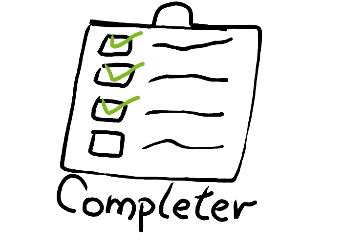

Belbin suggests that, by understanding your role within a particular team, you can develop your strengths and manage your weaknesses as a team member, and so improve how you contribute to the team.
Team leaders and team development practitioners often use the Belbin model to help create more balanced teams.
Teams can become unbalanced if all team members have similar styles of behavior or team roles. If team members have similar weakness, the team as a whole may tend to have that weakness. If team members have similar team-work strengths, they may tend to compete (rather than cooperate) for the team tasks and responsibilities that best suit their natural styles.
Knowing this, you can use the model with your team to help ensure that necessary team roles are covered, and that potential behavioral tensions or weaknesses among the team member are addressed.
Team leaders and team development practitioners often use the Belbin model to help create more balanced teams.
Teams can become unbalanced if all team members have similar styles of behavior or team roles. If team members have similar weakness, the team as a whole may tend to have that weakness. If team members have similar team-work strengths, they may tend to compete (rather than cooperate) for the team tasks and responsibilities that best suit their natural styles.
Knowing this, you can use the model with your team to help ensure that necessary team roles are covered, and that potential behavioral tensions or weaknesses among the team member are addressed.
Shapers are people who challenge the team to improve. They are dynamic and usually extroverted people who enjoy stimulating others, questioning norms, and finding the best approaches for solving problems. The Shaper is the one who shakes things up to make sure that all possibilities are considered and that the team does not become complacent.
Shapers often see obstacles as exciting challenges and they tend to have the courage to push on when others feel like quitting.
Their potential weaknesses may be that they're argumentative, and that they may offend people's feelings.
Shapers often see obstacles as exciting challenges and they tend to have the courage to push on when others feel like quitting.
Their potential weaknesses may be that they're argumentative, and that they may offend people's feelings.
Implementers are the people who get things done. They turn the team's ideas and concepts into practical actions and plans. They are typically conservative, disciplined people who work systematically and efficiently and are very well organized. These are the people who you can count on to get the job done.
On the downside, Implementers may be inflexible and can be somewhat resistant to change.
On the downside, Implementers may be inflexible and can be somewhat resistant to change.

Completer-Finishers are the people who see that projects are completed thoroughly. They ensure there have been no errors or omissions and they pay attention to the smallest of details. They are very concerned with deadlines and will push the team to make sure the job is completed on time. They are described as perfectionists who are orderly, conscientious and anxious.
However, a Completer-Finisher may worry unnecessarily, and may find it hard to delegate.
However, a Completer-Finisher may worry unnecessarily, and may find it hard to delegate.
Coordinators are the ones who take on the traditional team-leader role and have also been referred to as the chairmen. They guide the team to what they perceive are the objectives. They are often excellent listeners and they are naturally able to recognize the value that each team member brings to the table. They are calm and good-natured, and delegate tasks very effectively. Their potential weaknesses are that they may delegate away too much personal responsibility, and may tend to be manipulative.
Team Workers are the people who provide support and make sure that people within the team are working together effectively. These people fill the role of negotiators within the team and they are flexible, diplomatic and perceptive. These tend to be popular people who are very capable in their own right, but who prioritize team cohesion and helping people get along.
Their weaknesses may be a tendency to be indecisive, and to maintain uncommitted positions during discussions and decision-making.
Their weaknesses may be a tendency to be indecisive, and to maintain uncommitted positions during discussions and decision-making.
Resource Investigators are innovative and curious. They explore available options, develop contacts, and negotiate for resources on behalf of the team. They are enthusiastic team members, who identify and work with external stakeholders to help the team accomplish its objective. They are outgoing and are often extroverted, meaning that others are often receptive to them and their ideas.
On the downside, they may lose enthusiasm quickly, and are often overly optimistic.
On the downside, they may lose enthusiasm quickly, and are often overly optimistic.
The Plant is the creative innovator who comes up with new ideas and approaches. They thrive on praise but criticism is especially hard for them to deal with. Plants are often introverted and prefer to work apart from the team. Because their ideas are so novel, they can be impractical at times. They may also be poor communicators and can tend to ignore given parameters and constraints.
Monitor-Evaluators are best at analyzing and evaluating ideas that other people (often Plants) come up with. These people are shrewd and objective, and they carefully weigh the pros and cons of all the options before coming to a decision.
Monitor-Evaluators are critical thinkers and very strategic in their approach. They are often perceived as detached or unemotional. Sometimes they are poor motivators who react to events rather than instigating them
Monitor-Evaluators are critical thinkers and very strategic in their approach. They are often perceived as detached or unemotional. Sometimes they are poor motivators who react to events rather than instigating them
Specialists are people who have specialized knowledge that is needed to get the job done. They pride themselves on their skills and abilities, and they work to maintain their professional status. Their job within the team is to be an expert in the area, and they commit themselves fully to their field of expertise.
This may limit their contribution, and lead to a preoccupation with technicalities at the expense of the bigger picture.
This may limit their contribution, and lead to a preoccupation with technicalities at the expense of the bigger picture.
Without trust there's less innovation, collaboration, creative thinking, and productivity, and people spend their time protecting themselves and their interests – this is time that should be spent helping the group attain its goals.
Trust is also essential for knowledge sharing. A study published in the "Journal of Knowledge Management" found that trust was a key element in a team's knowledge acquisition. Put simply, if your team members trust one another, they're far more likely to share knowledge, and communicate openly.

If you want to build trust within your team, then lead by example Add to My Personal Learning Plan, and show your people that you trust others. This means trusting your team, your colleagues, and your boss. Never forget that your team members are always watching and taking cues from you – take the opportunity to show them what trust in others really looks like.
Open communication is essential for building trust. You need to get everyone on your team talking to one another in an honest, meaningful way, and you can use several strategies to accomplish this.
First, create a team charter Add to My Personal Learning Plan to define the purpose of the team, as well as each person's role. Present this charter at the first team meeting, and encourage each team member to ask questions, and discuss his or her expectations.
Next, consider organizing team building exercises Add to My Personal Learning Plan. When chosen carefully and planned well, these exercises can help "break the ice" and encourage people to open up and start communicating.
First, create a team charter Add to My Personal Learning Plan to define the purpose of the team, as well as each person's role. Present this charter at the first team meeting, and encourage each team member to ask questions, and discuss his or her expectations.
Next, consider organizing team building exercises Add to My Personal Learning Plan. When chosen carefully and planned well, these exercises can help "break the ice" and encourage people to open up and start communicating.
One way to build trust is to encourage your team members to see their colleagues as people. Think about creating situations that help them share personal stories, and bond.
Do this by asking sensitively about their family, or about their hobbies. Start by sharing some personal information about yourself, and then ask someone else about a hobby, or a musical interest.
Another way to get the team acquainted, and to form stronger bonds, is to socialize after work Add to My Personal Learning Plan or at lunch.
Do this by asking sensitively about their family, or about their hobbies. Start by sharing some personal information about yourself, and then ask someone else about a hobby, or a musical interest.
Another way to get the team acquainted, and to form stronger bonds, is to socialize after work Add to My Personal Learning Plan or at lunch.
When people work together, honest mistakes and disappointments happen, and it's easy to blame someone who causes these. However, when everyone starts pointing fingers, an unpleasant atmosphere can quickly develop. This lowers morale, undermines trust, and is ultimately unproductive.
Instead, encourage everyone in your group to think about the mistake in a constructive way. What can you all do to fix what happened, and move forward together? And how can you make sure that this mistake doesn't happen again?
Instead, encourage everyone in your group to think about the mistake in a constructive way. What can you all do to fix what happened, and move forward together? And how can you make sure that this mistake doesn't happen again?
Sometimes, cliques can form within a team, often between team members who share common interests or work tasks. However, these groups can – even inadvertently – make others feel isolated. They can also undermine trust between group members.
Start an open discussion about this with your team members, and see what they think about cliques and their effect on other group members. Only by addressing the issue openly can you discourage this damaging behavior.
Start an open discussion about this with your team members, and see what they think about cliques and their effect on other group members. Only by addressing the issue openly can you discourage this damaging behavior.
If you manage an established team that has trust issues, it's essential to find out how these problems originate, so that you can come up with a strategy for overcoming them.
Consider giving team members a questionnaire to fill out anonymously. Ask them about the level of trust within the group, as well as why they think there's a lack of trust. Once you've read the results, get everyone together to talk about these issues (but make sure that you respect the anonymity of the survey!)
Consider giving team members a questionnaire to fill out anonymously. Ask them about the level of trust within the group, as well as why they think there's a lack of trust. Once you've read the results, get everyone together to talk about these issues (but make sure that you respect the anonymity of the survey!)